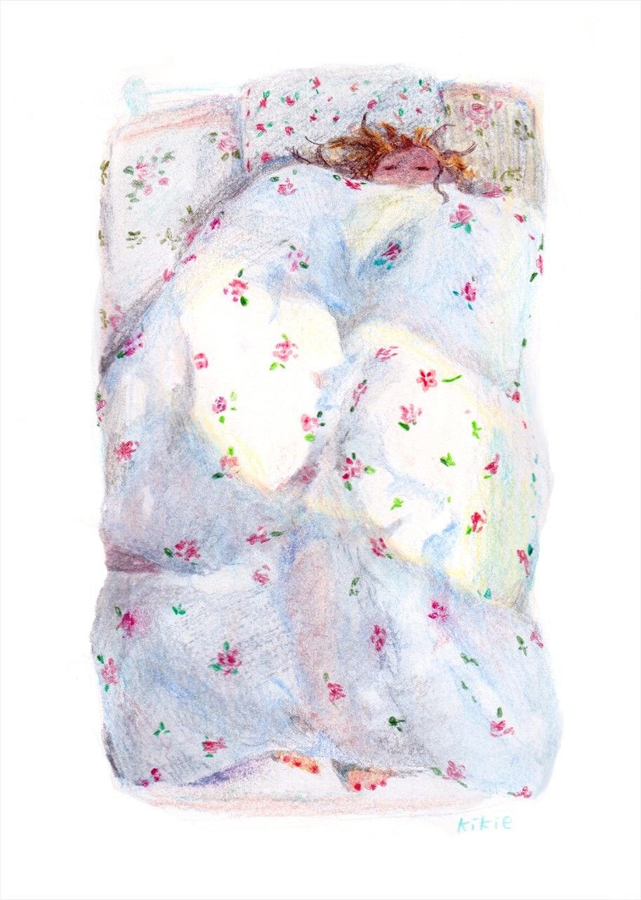
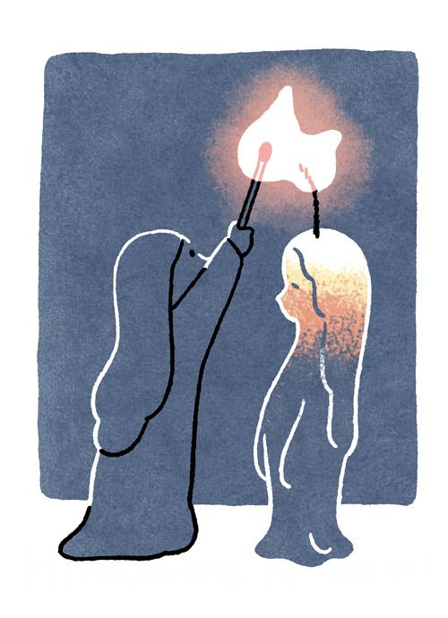

Insomnia Treatment and
Coping Strategies
Insomnia may feel endless, but it can be managed. From medical treatment to everyday habits and personal coping strategies, different approaches work together to help the body relearn how to rest. Recovery is not instant, but it becomes possible when we understand how sleep is shaped by both the mind and the environment.
Medical and Psychological Treatments
Insomnia can be managed, and recovery begins with understanding how the mind and body respond to rest. While there is no universal cure, consistent habits and the right mindset can greatly reduce its effects. Treatment often requires patience, self-awareness, and the willingness to change long-standing routines that interfere with sleep.
One of the most effective treatments is Cognitive Behavioral Therapy for Insomnia (CBT-I). It helps people identify unhelpful thoughts about sleep, reduce the anxiety that builds up at night, and retrain the body to associate the bed only with rest. Instead of lying awake and worrying, patients learn practical methods—such as getting up briefly when unable to sleep or setting consistent bedtimes—that restore balance to their circadian rhythm.
Medication can also be helpful for short periods, especially when the lack of rest has become severe. However, pills should never be the only solution; they work best when combined with behavioral therapy or lifestyle adjustments.
Healthy Habits and Mind–Body Practices

Healthy sleep habits play an equally crucial role. Maintaining a regular bedtime and wake-up time keeps the body clock stable. Avoiding caffeine, alcohol, and nicotine in the evening helps the nervous system wind down naturally. Turning off screens one hour before bed reduces blue-light exposure, which suppresses melatonin production. Creating a comfortable sleeping environment—dim light, cooler temperature, clean bedding, and calm scents—signals safety to the brain and allows it to rest.
Mind–body practices can also calm the system before sleep. Gentle stretching, slow breathing, or brief meditation help release tension that accumulates throughout the day. Some people find comfort in aromatherapy, soft background music, or ambient sounds like rainfall or ocean waves. Regular light exercise, such as walking or yoga, promotes better nighttime rest and reduces anxiety.
Coping Strategies and Professional Help
Coping strategies during sleepless nights are just as important as prevention. Instead of forcing yourself to sleep, it can be more helpful to accept the wakefulness calmly. Getting out of bed to read, write, or drink warm tea in dim light may reset your rhythm. Keeping a “sleep diary” to record bedtime, mood, and activities can reveal hidden patterns—like stress peaks or caffeine timing—that interfere with rest.
When insomnia lasts more than a few weeks, seeking professional help is a sign of care, not weakness. A doctor or sleep specialist can check for underlying issues such as depression, anxiety, or hormonal imbalance. Support groups, therapy, or medical evaluation help turn insomnia from a private struggle into something shared and treated.

Insomnia should not be seen as a personal failure; it is a treatable condition shaped by modern pressure and pace. With guidance, discipline, and self-kindness, it is possible to slowly reclaim peaceful nights and wake up feeling more renewed.